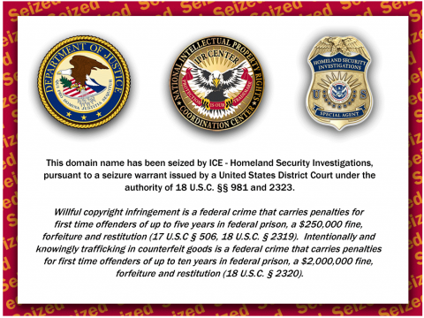

frcoal623 - No tweak left behind

Add to Cydia
Ways to connect:
- Standard: https://frcoal.cfd/
- - Domain expires April 1, 2024
- - Updates take a few minutes to show up
- - Probably not my fault if there's connection issues
- - No extra setup needed to connect
- Tor: http://frcoal623vobrv5c5rqp4ct4qlispcvkyd3pxgluvuvqvgzl5vrnk2id.onion/
- - Need Orbot or something to connect to Tor https://github.com/guardianproject/orbot-apple
- - Instant updates
Usage notes
repo supports rootless except zebra is busted and shows all packages
dm 四日同時同地球回転くるくる人型は四角錐の体現#6609 if you want a package here or something idk
don't try to install btmanager+, sonitus, waves, and eneko because the dependencies are missing (subject to change)
rootless tweaks compatible with fugu15 max AND palera1n rootless!!!! yay yay yay
Wall of Shame
(dependencies that need rootless update)
Cephei
LibGcUniversal (dev says there will be rootless update in a few days)
libsparkapplist